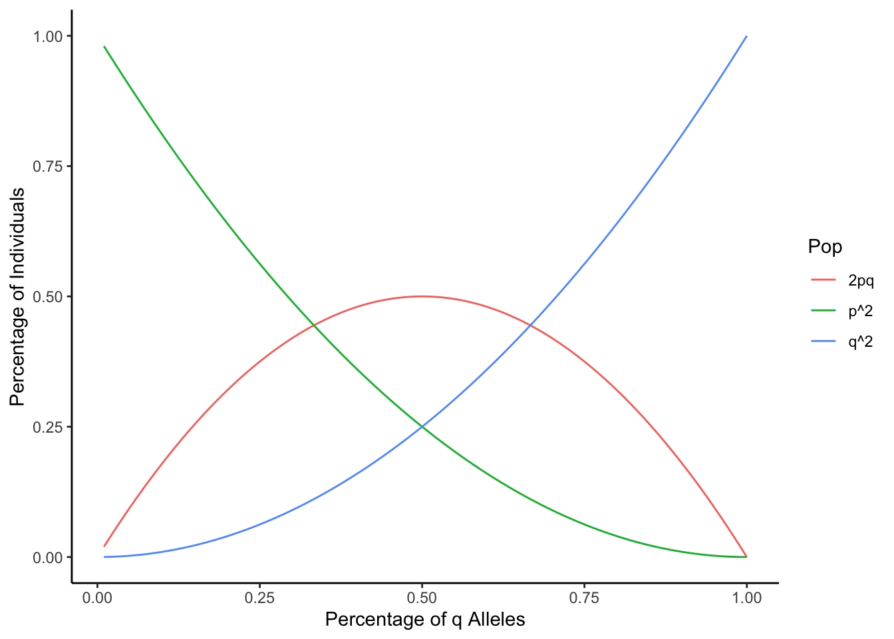

# HWE Function
# Given a value of q
hw <- function(q){
# calculate p
p <- 1-q
# the command print will return values
# past concatenates the string
# calculate expected homozygote dominant
print(paste0("P^2 = ",
round(p^2,2)))
# calculate expected heterozygotes
print(paste0("2PQ = ",
round(2*p*q,2)))
# calculate expected homozygote recessive
print(paste0("Q^2 = ",
round(q^2,2)))
}1 Hardy-Weinberg Equilibrium
2 Introduction
Hardy-Weinberg Equilibrium (or HWE) is a theoretical model designed to look at the “null expectation” for genotype frequencies within a population if no evolution is occurring. Thus, they are a null model against which we can explicitly test observed genotype frequencies to determine if a certain trait is undergoing selection.
This work-through is meant to be a hands-on supplemental for Lecture 6 covering Hardy-Weinberg Equilibrium.
2.1 Coding in R
This document is written in rmarkdown, which is a coding language used for creating professional documents in R using RStudio. All of these programs are available for free, and their requisite packages are likewise free. This document uses R 4.4.1.
R is a fairly straightforward coding language, and notable prefers the use of “<-” over “=” to define variables to avoid any logical errors (although in many instances these character strings can be interchangeable). R commands are fairly easy to use, and arguments are separated by commas. Here, we will be creating a basic program for studtying HWE.
3 HWE in R
HWE is defined as the following:
\(p^{2}+2pq+q^{2}=1\), where \(p+q=1\).
where \(p\) and \(q\) represent the ratios of different alleles. For our purposes, we will designate \(q\) as the recessive allele when the alleles show dominance characteristics. Usually, we can define the number of individuals by if we know what \(q\) is in a population. Thus, we will create a function that tells us what our expected ratios are given a specific value of \(q\).
Now, we can look at some examples.
3.1 Moths
Let’s assume we have two color morphs of moth, Black (B, dominant) and white (b, recessive). We have the following genotype frequences:
| Genotype | Frequency |
|---|---|
| BB | 0.5 |
| Bb | 0.3 |
| bb | 0.2 |
Thus, we know that \(bb = q^{2} = 0.2\).
q <- sqrt(0.2)
hw(q)[1] "P^2 = 0.31"
[1] "2PQ = 0.49"
[1] "Q^2 = 0.2"We can see the returned values are extremely similar to what we observe; thus, the population is in equilibrium.
3.2 Heterozygote advantage
Let’s pretend we have a trait where heterozygotes have higher fitness. This has been documented in several natural systems. In this case, let’s say heterozygotes for a trait have increased disease resistance when it comes to locus T. Thus:
| Genotype | Frequency |
|---|---|
| TT | 0.15 |
| Tt | 0.70 |
| tt | 0.15 |
Thus, \(q^{2} = tt = 0.15\).
hw(q=sqrt(0.15))[1] "P^2 = 0.38"
[1] "2PQ = 0.47"
[1] "Q^2 = 0.15"We can see here that the populations are not in equilibrium, and there appears to be evolution occurring in the population. The values we expect do not align with what we observe.
4 Visualizing Equilibria
We can also look at the dynamics of the equilibria within these populations. Bear with me through the following code!
# Install necessary packages for visualizing
# May take some time...
# save to personal library, if asked
install.packages("tidyverse")# Load package into R
library(tidyverse)── Attaching core tidyverse packages ──────────────────────── tidyverse 2.0.0 ──
✔ dplyr 1.1.4 ✔ readr 2.1.5
✔ forcats 1.0.0 ✔ stringr 1.5.1
✔ ggplot2 3.5.1 ✔ tibble 3.2.1
✔ lubridate 1.9.3 ✔ tidyr 1.3.1
✔ purrr 1.0.2
── Conflicts ────────────────────────────────────────── tidyverse_conflicts() ──
✖ dplyr::filter() masks stats::filter()
✖ dplyr::lag() masks stats::lag()
ℹ Use the conflicted package (<http://conflicted.r-lib.org/>) to force all conflicts to become errors# Create number series for q, 0 to 1
q <- (1:100)/100
# Complementary series for p
p <- 1-q
# Values of 2pq at each site
pq <- 2*p*q
# Create a dataframe of different values
# q
q0 <- cbind(q,"q")
# p
p0 <- cbind(p,"p")
# 2pq
pq <- cbind(pq,"2pq")
# q^2
q2 <- cbind(q^2,"q^2")
# p^2
p2 <- cbind(p^2,"p^2")
# combine all variables into one giant data frame
pop <- rbind(q0,p0,pq,q2,p2)%>%
as.data.frame()
# preview data frame
head(pop) q V2
1 0.01 q
2 0.02 q
3 0.03 q
4 0.04 q
5 0.05 q
6 0.06 q# rename columns
colnames(pop) <- c("Val","Pop")
# make sure formats are right for interpretation
# continuous numerical
pop$Val <- as.numeric(pop$Val)
# categorical
pop$Pop <- as.factor(pop$Pop)
# index values
pop$X <- 1:100/100
# Remove plain p and q
pop2 <- pop%>%filter(Pop != "q",Pop !="p")
# plot the data
# group by population (p2, q2, 2pq)
ggplot(pop2,aes(x=X,y=Val,group=Pop))+
# line graph
geom_line(aes(color=Pop))+
# clean plot
theme_classic()+
# Change labels
xlab("Percentage of q Alleles")+ylab("Percentage of Individuals")
As we can see here, as the values of \(p\) and \(q\) change, we have different equilibrium states.